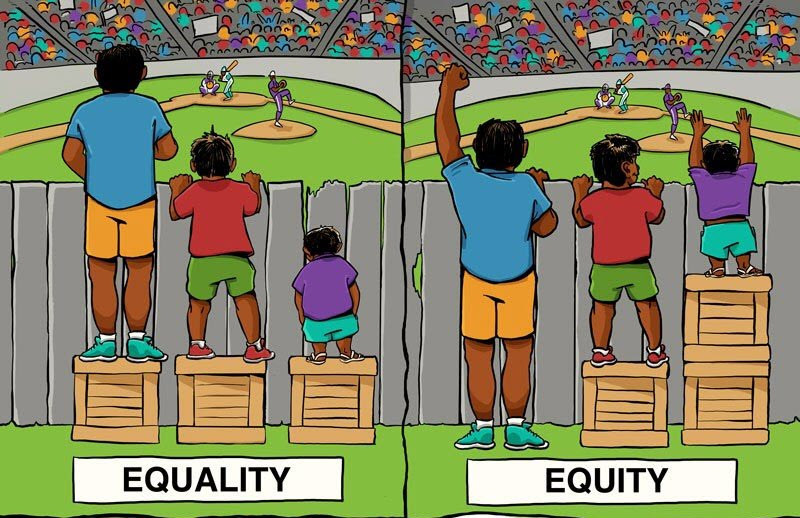

1.6 Core Values: Equity & Communication
What is equity? Does equity equal equality?
Equity and equality are similar, but there is a key distinction: under equality everyone is treated in an identical manner, whereas under equity everyone is treated fairly according to their abilities and needs.
The following image nicely illustrates the concept of equity

Image attribution: Universalincome [cropped] by Leigh Blackall under Attribution 2.0 Generic (CC BY 2.0).
Communication
We do research to learn; we share our findings to build a culture of learning and to enhance the future of our disciplines. We also share to build community with researchers and other stakeholders.
But because there can be a range of stakeholders with different needs, values, and backgrounds, it is important to communicate science in ways that consider these specific attributes. Processes and findings need to be contextualized (put into a context meaningful to the particular stakeholder) and made accessible, both in message (the content of the communication) and medium (the way the message is conveyed). The more avenues we use to share and engage and the fewer barriers to access we put up, the more equitably our discoveries can be shared.
Because there can be a range of stakeholders with different needs, values, and backgrounds, it is important to communicate science in ways that consider these specific attributes.
Equity in science communication can be explored in many ways; none addresses all issues of equitable access, but each helps to enhance scientific literacies in our society. For example,
- Open access publications help to make research available to those who cannot afford costly journal subscriptions.
- Citizen science engages members of the public in the research process, contributing their voices to projects.
- Novel ways of sharing a message, like podcasts or Twitter, can reach communities with unique access needs or preferences.
Audiences
The language and techniques your Biology professor uses to communicate scientific information will vary according to her audience. Depending on whom she's interacting with, your Biology professor will use different language and techniques to convey scientific information. For example, in the course of her work, she may be
- engaging you and your classmates in learning in the classroom;
- talking to a member of the public;
- working on research with a departmental colleague; or
- advising a government employee involved in writing policy.
In each case, she adjusts her communication to match her audience's needs, educational background, and experience. Her message isn't fundamentally changed or simplified, but it does need to be delivered in a way that is understanding and respectful of her audience.
Consider each of the following three explanations of how DDT affects birds in terms of its intended audience.
Aimed at Researchers in the Discipline
Dichlorodiphenyltrichloroethane (DDT) is a persistent organochlorine compound found worldwide that causes significant anatomical, physiological and behavioural abnormalities in humans and wildlife.
Aimed at Post-Secondary Science Students
DDT and its metabolites cause eggs to have thin shells and reduce levels of a hormone necessary for female birds to lay eggs. Population declines and local disappearance of peregrine falcons, bald and golden eagles, ospreys, kestrels, and other predatory birds were recorded.
— Pesticides and Birds: From DDT to Today's Poisons.
Aimed at the General Public
High concentrations of DDT in birds cause weakness in the shells of their eggs, which leads to a reduction in their population. DDT is now banned because of this.